50
Social Science Class V
4
Observe these pictures.
How these living beings survive situations like extreme heat, unbearable
cold etc.?
Fur of goat, feathers of parrot and tortoise's shell provide protection like
a clothing in unfavourable weather conditions. Have you ever thought
about the way in which humans faced such situations?
•
The clothing needed for humans had to be shaped with the materials
available in nature.
•
Clothing through the Ages
Page 50

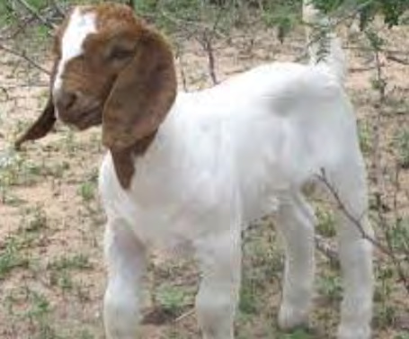
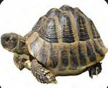
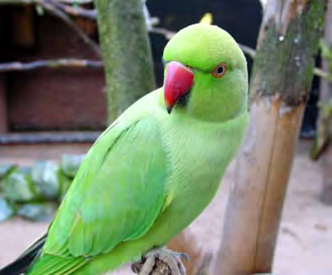
Page 51
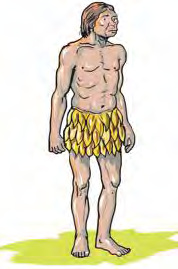
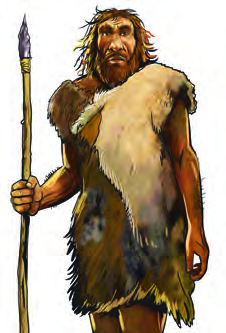


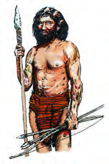
51
Clothing through the Ages
•
Bark of trees
•
•
How does clothing become useful to us?
Complete the list by adding more details.
•
Protection from cold
•
Protection from heat
•
Maintains body temperature
•
Protection from insects
•
•
What types of clothing do people use today?
What materials did early humans use as clothing?
The clothing we use has a long history. Let's see how we arrived at the
design of the diverse types of clothing that we use today.
Observe the pictures.
Page 52
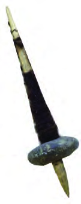

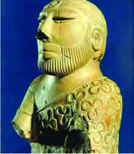
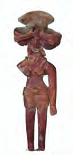

52
Social Science Class V
Clothing in the Indus Valley
The Indus Valley was an ancient river
valley civilization that existed in the
north western part of India. From the available
evidences it is assumed that the people of Indus
valley made clothing from cotton and wool. The
dressed statues excavated from there reflect the
clothing style of the people. It is believed that
cotton was traded from here to other regions.
The making of clothes by early humans was not like that
of today. What could be the reason?
Stone needle
Fibres were combined and spun to make long yarns. Weaving is the
technique of making cloth with these yarns.
Humans used the materials they got from their surroundings
as clothing when they lived by hunting. They used grass,
bark of trees (Maravuri) and hide (animal skin) for making
clothes. Horn and bone of animals were used as needles
and tools to make clothes. During the period when polished
stones were used as weapons, stone needles helped to sew
clothes. They also made clothes by cleaning and softening
animal skin and fur.
Towards Weaving
In the early days, fibres collected from the surroundings were used for
making clothes .
Gradually, the technique of weaving became more developed. In the
early days, clothes were made by hands using yarns from cotton and
jute. They realised that clothes woven from yarns were better than animal
skin. This led to the spread of woven clothes. The method of making
cloth using wooden looms was developed later.
The increase in the need of clothing led to the invention of weaving
equipment. This helped to increase the speed of weaving. Handloom
clothes are clothes woven on handloom using yarns.
Page 53
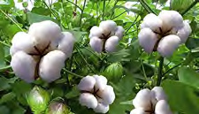
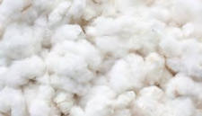
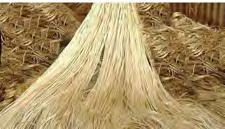
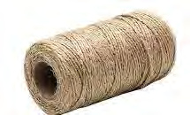
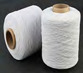
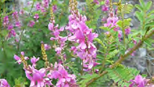
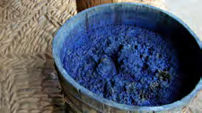
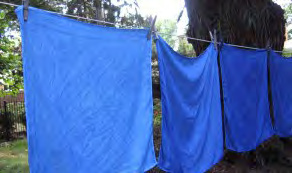

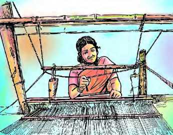
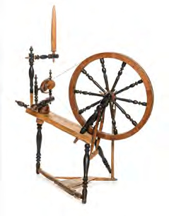
53
Clothing through the Ages
Cotton
Cotton
Cotton is used to make clothing all over the world. Cotton obtained from the cotton
plant is converted to yarns and used to make clothing. Cotton has been cultivated
in India since ancient times.
Jute
Jute
Jute is produced from the jute plant. It is a natural fibre. Most of the world's jute
cultivation is on the fertile banks of the river Ganges in India. Large quantities
of jute were taken from India by foreigners for the textile industry.
Indigo
Indigo
In the early days, a dye made from the indigo plant was used to colour clothes.
Later various pigment were mixed with indigo, to make different colours.
An early spinning machine
Handloom
The invention of handloom was a breakthrough in the field of cloth
manufacturing. Clothes were coloured with a dye made from indigo
plant. The technique of weaving became more popular over the years.
Page 54
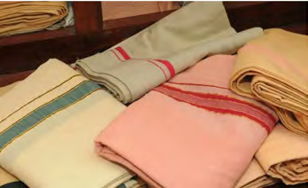
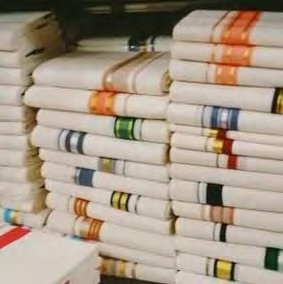
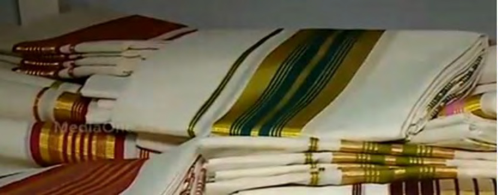

54
Social Science Class V
Spinning Jenny
The spinning jenny was invented by James
Hargreaves. The handmade yarn production
was not enough to meet the demand of the
textile industry at that time. The invention of the
Spinning Jenny accelerated the production of yarn.
Powerloom
Powerloom was invented by Edmund
Cartwright. The power loom is operated
either with the help of electricity or some other energy
source. A powerloom can produce more cloth much
faster than a handloom.
Handloom clothing
There are many handloom centres in Kerala too. Balaramapuram in
Thiruvananthapuram district, Kuthampulli in Thrissur district and
Kannur are major handloom centres.
The progress in science has led to the invention of new machines in the
field of cloth manufacturing. The Spinning Jenny seen in the picture is
one such a machine.
The rise in population increased the demand for clothing. New machines
became a part of weaving. It reduced the human effort. The handloom
was later replaced by the power loom.
Page 55
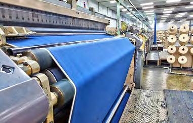
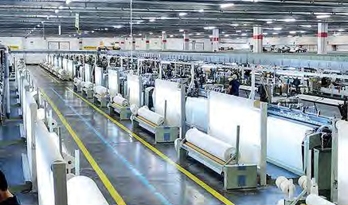

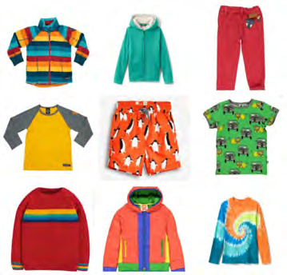
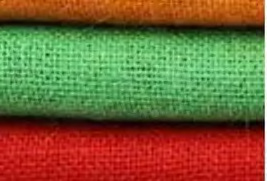
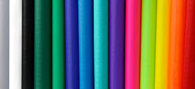
55
Clothing through the Ages
Mechanised cloth manufacturing
The Europeans
Europe is one of the seven continents. The people of this continent are
called the Europeans. The Portuguese (Portugal), the Dutch (Netherlands), the
English (England) and the French (France) came to India from Europe for trade.
They colonised India and took the raw materials from here to their lands. Among
them, the English colonised India for the longest period.
Variety of clothing and clothes
The Europeans travelled to different parts of the world in search of
markets, to sell the clothes produced as a result of mechanisation. As
part of it, they reached India also. They took the raw materials needed
for the textile industry from India to Europe. Clothes they produced
there with the help of machines were sold in India.
The changes in the society also had a significant impact on the cloth
manufacturing. The increase in demand for clothing led to the
development of more advanced weaving machines. Production increased
with the help of machines. Clothes with better quality and variety
reached more people. Artificial dyes began to be used to colour clothes.
Page 56
56
Social Science Class V
Fibres used in Textile Industry
Changes brought by the use of machinery
in the manufacture of clothes.
•
Increase in production of clothes.
•
Reduction in human labour
•
Diversity in clothing
•
Quality clothing
•
Spread of clothing
•
•
Synthetic fibres
Synthetic fibres are produced from
chemicals such as petroleum.
Synthetic fibres are generally less
expensive to produce clothes
than natural fibres. It also has
the advantage of not wrinkling
quickly.
Examples
Polyester, Nylon, Rayon etc.
Natural fibres
From animals
Examples
Wool is produced from sheep and
silk is produced from silkworms.
From plants
Example
Cotton and jute fibres are
produced from cotton and jute
plants respectively.
Discuss the changes in the
textile industry brought
about by the introduction of
machines.
The colour varieties found in most of our clothing we use today were
made by mixing these types of dyes.
Notice the qualitative changes that took place in the textile field when the
machines began to be used for manufacturing clothes.
Both natural and synthetic fibres are used to manufacture clothes.
Natural fibres are produced from animals and plants. The discovery of
synthetic fibres led to the production of clothes of different textures and
qualities. The use of synthetic fibres such as polyester and nylon helped
to make clothing more durable and cost-effective.
Page 57

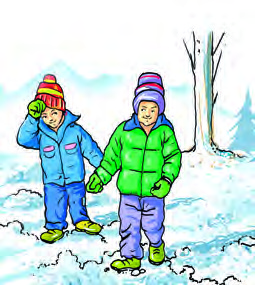
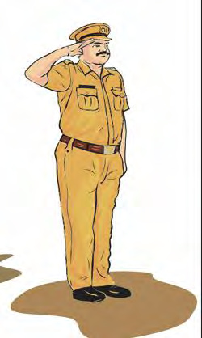

57
Clothing through the Ages
1
2
3
4
5
6
Complete the table by finding the organisms and plants from which
natural fibres are produced.
Collect scrap pieces of cloths by visiting a tailoring shop in your
locality. Differentiate the clothes made from natural fibres and
synthetic fibres and paste them on the chart and display them in
your class.
Wool
……………
Silk
Silk worm
Cotton
Cotton plant
Jute
……………
Diversity in Clothing
Don't we wear different types of clothes that suit different climate? Are
the differences in clothing only due to changes in climate?
Observe the given pictures. Find out the situations in which each
type of the clothing is used. Write the corresponding number of the
picture in the table given.
Page 58
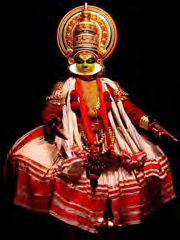
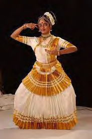
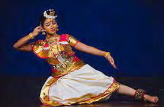
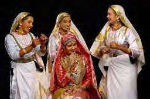
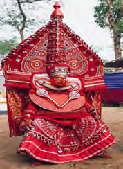
58
Social Science Class V
Climate
Immunity
Authority/Status
Employment
1
.....................
.....................
.....................
Prepare an album by collecting pictures indicating dressing in
various situations.
Different art forms
Climate, customs, positions of power, employment and regional
differences influence clothing. This variety can be seen not only in the
clothing but also in jewellery, hats and footwear.
Now a days a lot of diversities and similarites can be seen in clothing
and style of dressing. Most of us choose clothing suitable for climate
and comfort for conveyance.
Another area where diversity in clothing can be seen is in the field of
arts. Don't we like to enjoy art forms with a variety of colourful
constumes?
Page 59
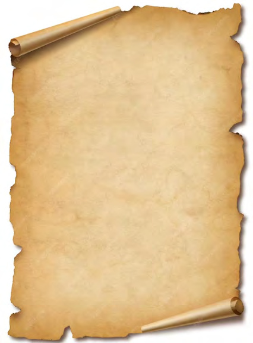


59
Clothing through the Ages
Discuss the diversity of costumes in various art forms.
Observe the costumes in the given pictures. Identify the art forms
to which they are associated and list them.
•
•
•
•
•
•
Discrimination in Clothing
Page 60

60
Social Science Class V
Discuss and make note about the violation of rights that existed in
clothing.
Travancore
Travancore was a princely state in British India comprising most of
southern Kerala, a small part of central Kerala and Kanyakumari
district, which is now a part of Tamil Nadu. The Travancore state expanded
during the reign of Anizham Tirunal Marthandavarma in mid 18th century. With
the formation of the state of Kerala in 1956, this princely state became a part
of Kerala.
Upper Cloth Agitation
During the early 19th century, a certain section of the women in Southern Travancore
made a protest for the right to cover the upper part of their body. At that time
only women who were said to belong to the upper caste had the right to wear
the upper clothes as they wished. Women of the so called lower castes did not
have the right to cover the upper part of their body in front of the upper castes.
This protest is known in history as Upper Cloth Agitation.
This is a proclamation issued by Uthram Tirunal Marthandavarma, the
then king of Travancore in 1859, granting the right to women of the so
called lower castes of southern Kerala to wear the upper clothes.
What do you understand from this proclamation?
This proclamation reveals that the caste system existed at that time
prevented certain sections of the people from wearing clothes as they
wish.
Cloth as a Weapon of Agitation
Cloth has been used in the past as a weapon against various forms of
exploitation. One of the most important among them was the struggle
led by Mahatma Gandhi in India's Freedom Movement.
Gandhiji made khadi, charka and boycott of foreign goods as a part of
the freedom struggle. He encouraged khadi clothes made by spinning in
the charka. He exhorted people to wear khadi clothes. Gandhiji demanded
to boycott foreign clothes by making and wearing indigenous clothes.
Page 61
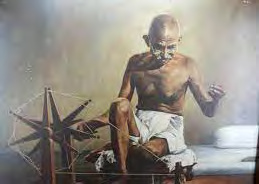

61
Clothing through the Ages
How did Charka and khadi clothing become weapon of agitation
against the British? Make a poster and display in class.
Indian people boycotting and burning
foreign clothes
Gandhiji spinning yarn on the Charka
Gandhiji turned the freedom struggle into a mass movement by making
clothes as a weapon of struggle. Charka became a symbol of the Swadeshi
movement in Indian freedom struggle. Wearing khadi clothes and khadi
caps became a symbol of patriotism.
New Trends in Clothing
Do you like to wear the same types of clothes all the time?
What are your preferences in dressing?
The Khadi Movement
The Khadi movement was started in India in 1918 under the leadership of
Gandhiji. Khadi has a distinctive place in the history of India's freedom struggle.
As the Khadi Movement gained momentum the sound of 'Charka' rose from
Indian Villages. Then, the khadi clothing spread all over India.
The Swadeshi Movement
The Swadeshi Movement was started on 7th August 1905 as a part
of India's freedom struggle. Its aim was to boycott the British-made
goods and to promote the production and use of Indian-made goods. August
7 which marked the beginning of Swadeshi movement has been observed as
National Handloom Day in India since 2015.
Page 62
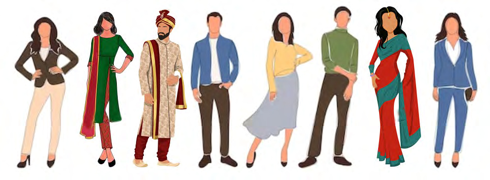
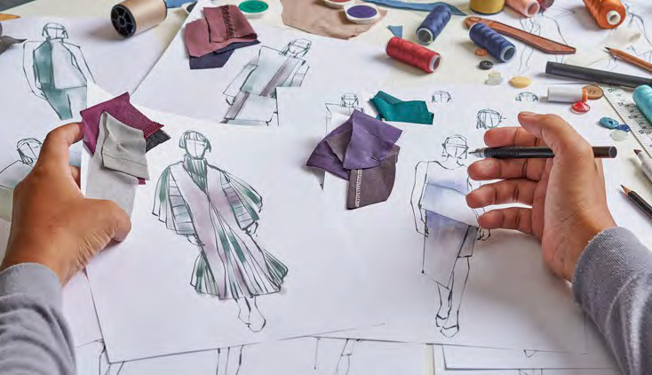
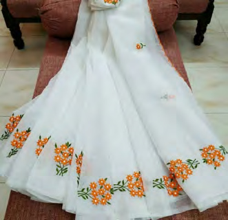
62
Social Science Class V
Organise a discussion on how advertisements, movies, social media
etc. influence the choice of clothing.
Fashion designing
Embroidered cloth
Observe the pictures.
Changes take place day by day, not only in the methods of manufacturing
but also in the design, style and use of clothing. Personal preferences,
interests and convenience strongly influence today's clothing.
There is an interesting development in clothing also along with the
change in beauty concepts. Advertisements, movies, social media etc.
have a significant influence on the choice of clothing.
A lot of employment opportunities are opening up today in the fields
like fashion designing and embroidery. Today fashion designing has
grown into a field of study with immense employment potential.
Page 63

63
Clothing through the Ages
Weaving
Employment sectors in
cloth manufacturing
Costume design
Sewing
Spinning
Dyeing
Designing
Embroidery
How can we convert used and unwanted clothing into useful materials?
Talents at the Work Experience Fair
with carpets made from scrap clothes
Malappuram District Panchayat with
a project to make handicraft products
from old clothing
Vadakara Municipal Corporation with
the project 'Give us Sarees, We'll give
you bags'
Voluntary organisations with a
mission to collect clothings for relief
camps
Let's see what are the employment sectors in cloth manufacturing
sector.
Observe the given headlines.
Do you use all the clothes you buy?
Have you tried making handicrafts from used clothes?
Page 64
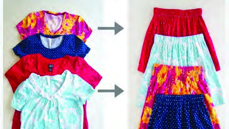
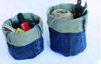
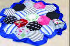
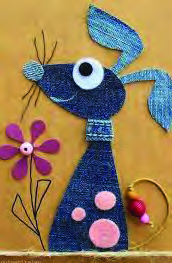
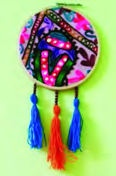
64
Social Science Class V
Today, tons of clothes are thrown away all around the world. This
adversely affects the environment. The volume of unused and discarded
clothes is increasing in our country. How can such clothing be reused?
Observe the pictures.
Can we also make such craft products?
If we observe the historical timeline of clothing, we can see that in the
early days, protection of body was given importance. Following that, the
geography and climate influenced manufacturing of clothes and style of
clothing. Changing beauty concepts and cultural diversities influence
the style of contemporary clothing.
Page 65
65
Clothing through the Ages
1.
Visit any handloom centre in your area and gather information about
its method of cloth manufacturing.
2.
Prepare an album based on the topic ‘Diversity of Clothing in Indian
States’ by collecting pictures of diverse style of clothing in various
states.
3.
We live in an age in which a wide variety of clothing is readily available.
But, the availability of clothes was limited in earlier times. Ask the
elders in your family about the changes in clothing and style and make
a note.
4.
Collect pictures of different art forms and make an album titled 'Costume
Diversity in Art'.
5.
Collect old clothes from your home and do craft work with them.
Present them in the Social Science Club.
6.
Set up a Clothing Collection Centre in the school to collect old and
clean clothes and deliver them to old age homes, orphanages and relief
camps near your school with the help of the teacher.
Don't we feel more proud and confident when we wear our favourite
cloth?
Clothing, which is one of the basic human needs, should be available to
all sections of the society. We can also be a part of such activities.
Extended Activities